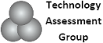
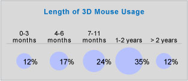
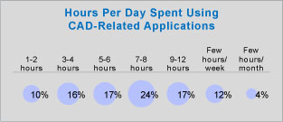
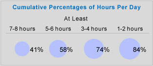

Not: Bu yazý, Technology Assessment Group tarafýndan Temmuz 2008'de hazýrlanmýþ,"The Economic Payback of 3D Mice for CAD Design Engineers" isimli araþtýrma raporunun bir tercümesidir.
Özet
Technology Assessment Group (Teknoloji Deðerlendirme Grubu), ürün deðerlendirmesi ve verimlilik ölçümü üzerine uzmanlaþmýþ baðýmsýz bir ürün danýþma kuruluþudur.
GE, IBM ve University of Toronto tarafýndan yapýlan kullanýcý arabirimi araþtýrmasý, 3D CAD gibi karmaþýk 3D uygulamalarýndaki önemli verimlilik artýþýnýn, "6 serbestlik derecesi" (6DoF - 6 Degrees of Freedom) özelliðini barýndýran 3D fareler sonucunda oluþtuðunu belirtiyor.
Bu çýkan rapor, piyasa verileri ve baðýmsýz araþtýrmalarý, þirketlerin ekonomik sonuçlarýný tahmin etmeleri konusunda taslak oluþturmalarý için birleþtirir.
Önemli Sonuçlar:
- CAD tasarým mühendislerinin %84'ten fazlasý, 3D mouse kullanýmýnýn sonucu olarak, ürün tasarýmlarýnda ya da tasarýmdaki hata tespitlerinde önemli ya da belirgin bir geliþme rapor etti.
- 3D mouse kullanan CAD kullanýcýlarýnýn rapor ettiði ortalama verimlilik artýþý %21.
- 3D Mouse'larýn geri ödeme süresi çok kýsadýr, genellikle 1 aydan daha az.
GÝRÝÞ
Rakiplerden önce pazara yüksek kaliteli, kusursuz ürünler sunmak, her þirketin baþarýsýnýn anahtarýdýr. Her iki faktör de - kalite ve pazara giriþ hýzý - kritiktir. Þirketler performanslarýna göre kolayca yükselip düþebilirler. Ýþ dünyasý bunun bir çok örneði ile doludur. Örneðin:
- Otomobil þirketleri, müþterilerin ekonomi anlayýþýna ve hükümet düzenlemelerine karþýlýk olarak yeni nesil verimli yakýt kullanan araçlarý pazara sunmak için yarýþýyor.
- Reuters'in raporuna göre, "Bu yarýþ yeni bir pazar oluþtururken ve þarj edilebilir elektrikli araçlar bu pazarý kýzýþtýrýrken, GM yöneticileri Volt modelinin Amerikalý otomobil üreticilerinin, bölgesel teknoloji kralý, Japon rakip Toyota Motor Corp.'u engelleme çabalarý için çok can alýcý olduðunu belirtti "
- Cep telefonu þirketleri, müþterilerine cezbedici teklifler sunmak için mücadele ediyorlar.
- 2006'da Hot Razr modeli ile lider olan Motorolla, daha sonra ilgi uyandýran modeller sunamayýnca, 2008 yýlýnda 3. sýraya geriledi.
- Uçak üreticileri, ileride gelirlerinin önemli bir yüzdesini oluþturacak olan modelleri üretmeye çabalýyorlar. Rakiplerinden bir kaç ay önce pazara girmek, bir kaç milyar dolarlýk sipariþ farký yaratabilir.
Ürün geliþtirme zincirinde, yüksek kaliteli ve kusursuz ürünlerin hýzlýca pazara sunulmasýndaki en önemli nokta, CAD dizayn mühendislerin performansýdýr. Eðer ürün tasarýmlarýný geliþtirebilirlerse, problemleri erken fark edebilirlerse, ve tüm bunlarý daha kýsa zamanda yapabilirlerse, þirketlerinin Pazar performanslarýný yükseltmeye katkýda bulunurlar.
GE Research, IBM, the University of Toronto yapýlan temel kullanýcý arayüzü araþtýrmasý, CAD dizayn mühendislerine, 3D objeleri içgüdüsel olarak incelemelerine ve ayný anda her iki elle çalýþmalarýna olanak saðlayan kullanýcý arayüzü cihazlarý kullanýmýnýn performans artýþlarýný belgeledi.
3D mouse'lar, 3D modellerin içgüdüsel incelenmesine ve ayný anda her iki elin kullanýmýna olanak saðlayan kullanýcý arayüzü cihazlarýdýr. 3D mouse'lara adapte olan þirket ve mühendisler, etkileyici performans artýþlarý rapor etmiþlerdir. 3D Mouse'larýn ne kadar deðiþiklik yaptýðýna dair tam ve sayýsal bir araþtýrma yapýlmamýþtýr. Çünkü 3D Mouse'lar bir þirket yatýrýmýdýr, ve bu yatýrýmlarýn, þirketlerin organizasyonlarýna uygunluðu deðerlendirmek için kullanýlabilecek ekonomik sonuçlarý anlamak önemlidir.
Teknoloji Deðerlendirme Grubu (TAG), bu sorularý yanýtlamak için aþaðýdaki araþtýrmayý yayýnladý:
- 190 3D mouse kullanýcýsýnýn cevaplamasý için, 14 soruluk bir anket hazýrlandý. Bu anket Mayýs 2008'de, baðýmsýz bir araþtýrma kurumu olan MarketLab tarafýndan cevaplandýrýldý. Ankette, kullanýcýlara þu doðrultuda 3D mouse deneyimleri soruldu:
- Ürün dizaynýnda fark edilen geliþmeler ve erken hata tespiti.
- Verimlilik artýþý (iþlerini geliþtirmekte ne kadar hýzlýydýlar).
- 3D mouse ile kendilerini rahat hissetmeleri ve üretken olabilmeleri için geçen zaman.
- 3D yazýlýmlarý kullanarak geçirdikleri zaman.
Bu rapor, bu araþtýrmalardan elde edilen sonuçlarý sunduðu gibi, temel kullanýcý arayüzü araþtýrmasý, bu sonuçlarýn nedenleri açýklar.
Rapor, þu temel yönetim sorularýný içerir:
- 3D Mouse'larýn, 3D dizayn mühendisleri için yatýrým geri ödemesi nedir?
- Þirketimiz için ekonomik geri ödemeyi nasýl belirleyebiliriz?
KULLANICI SONUÇLARI
ABD'de, 3Dconnexion 3D Mouse'larý kullanan, 190 CAD mühendisi bu ankete katýldý. Bu anketin içinde, 10'dan daha az CAD kullanýcýsý mühendisin yer aldýðý þirketlerden, 500'den fazla CAD kullanýcýsýnýn yer aldýðý þirketlere kadar geniþ bir aralýk vardý.
Bu dizayn mühendisleri daha çok CATIA Inventor, NX, Pro/ENGINEER ve SolidWorks gibi bilinen 3D CAD uygulamalarýný kullandýlar.
Anketteki mühendisler, 3 aydan daha az ya da 2 yýldan daha fazla olmak üzere, 3D Mouse'larý tüm yönleriyle test ettiler. Aþaðýda gösterilen oranlarla, bu mühendislerin %53'ü, 3D mouse'u bir yýldan az, %88'i iki yýldan daha az kulandý.

Þunun farkýnda olunmalýdýr ki, bu kýsa ve öz bir rapor olduðundan dolayý, yüzdeliklerde %±1'lýk sapmalar olabilir.
Ýþ Özellikleri
CAD dizayn mühendisleri, diðer bilgisayar kullanýcýlarýndan farklýdýr, çünkü iþlerinin bir parçasý olarak günde saatlerce saatlerce özel 3D CAD yazýlýmlarýyla çalýþýrlar.
Buna göre, mühendislerin %74'ü günde en az 3 saat 3D yazýlýmlarýyla çalýþýyorlar. %41 ise, günde en az 7 saatten fazla3D uygulamasý kullanmakta. Þekil, kullaným daðýlýmýný grup ve kümülatif olarak göstermektedir.

|